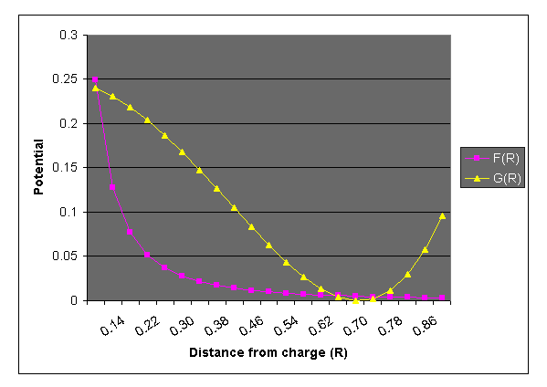

Metaballs
By Ryan Geiss - 3/10/2000
Contents:
I. Metaballs
II. Rendering
III. An Optimization
IV. Control
V. Miscellaneous
VI. Bonus Updates
Purpose:
To review what a metaball is, and how to render them; and to describe a
new optimization I've made for rendering metaballs. For complex scenes,
it can render hundreds of times faster, though I'm certain others have
discovered this trick as well. It does very slightly change the
characteristic shape of the blobs, but there is no loss in image quality
whatsoever. (I actually developed all this about two years ago, but just
now felt like writing it all down, and had the time!)
By the way, I realize this is a tutorial and not a FAQ, as I sometimes
call it. Oh well. =)
I. Metaballs
I will begin with a brief review of what a metaball is, for newbies. A metaball is
an isosurface in 3D space. Basically, define a function in 3D space, which takes as input
the x,y,z coordinates of a point, and outputs a floating point value. Then decide on a
threshold for this output; points in 3D space that fall below the threshold (when run
through the function) are ONE, while points above the threshold are ZERO. This divides
3D space into two sets - think of it as solid (occupied) space versus empty space (air).
The continuous surface that is formed where the two meet (assuming the function's output is
continuous/differentiable) is called an isosurface. This isosurface has a different look
for each possible function.
The function [f(x,y,z) = x^2 + y^2 + z^2] will have a value of zero at the origin, and for
any other point, its value will be the distance from the origin. Therefore the isosurface
created by this function (when you take the output vs. a threshold value) will create a
beautiful, perfect sphere. (The radius of the sphere is the square root of the threshold.)
However, we've all seen spheres a million times in raytracing, and they get kind of
boring, right?
Another possible function: [f(x,y,z) = ax + by + cz]. This will divide space in half along
a plane, whose normal is . Not too useful for rendering, but good for an example
of an isosurface.
The function [f(x,y,z) = 1.0 / (x^2 + y^2 + z^2)] might look familiar to people who've
studied physics. This is the equation for the strength of the electric field due to a point
charge at the origin. The field is +infinity at the origin; it is 1.0 at a distance of 1.0
form the origin; and it tails off to zero as we travel away from the origin (though it never
really goes to zero). Simply speaking, this function is the graph of 1/r^2, where r is the
radius (distance of the point in space from the point charge).
Why is this useful? Consider the electric field that you get when you put an electric
charge at a point in space. (The coordinate space used earlier - where the point charge
was at the origin - is just a coordinate space relative to the point charge. We want to
work in "world space" - real coordinates - now.) The electric field is infinity at exactly
the point where the charge lies, and drops off quickly as you go away from the charge.
But no matter how far away you are from that point, it still has some contribution.
Regardless, if you draw an isosurface about this point, you'll still get just a sphere.
However, now place two point charges close together in space, and you'll see something
interesting. Consider the net electric field as the sum of the electric fields of the two
point charges. They no longer form two spheres (if they're close enough together) - they
now form a blob, also known as a metaball.
Below is an image of an electric field created by some point charges. The strength of the
field is indicated by the brightness of the color:
Next, I show you where the point charges lie that create the electric field, marked by nice
purple dots. They are of varying strengths:
Now, I'm sure you've seen a topography map before, where bands of color are equated to
certain discrete heights in terrain. Here, we do the same thing, but we map the electric
field strength into several discrete color bands. Think of it as a height map in a natural
park. Here are 6 bands, and 9 bands, respectively:
Above, where you see a contour, this is an equipotential line - a line along which the
potential (physics jargon for the electric field strength) is equal at all points. Now, think
about what would happen to our 'terrain map' if there was a great flood. This would
divide it into two parts - one above the water, and one below. The shoreline would be an
equipotential line, right? Okay, so now bring yourself back to the 2D (flat image) realm.
Say we pick some threshold value at which to place an equipotential line, like the white
one in this image:
Next we divide space along this line. We want to categorize every point in space, based
on whether or not it's inside, or outside, of some arbitrary shape, or whether or not the
electric field strength exceeds the threshold there. We get this:
Nice blobs, yes? Now, picture doing this in 3D space instead of 2D space. When you draw
these equipotential lines, they actually become equipotential surfaces, otherwise known
as isosurfaces, as we were talking about before. And they form beautiful, 3-dimensional
blobs...
II. Rendering
Now, rendering a sphere is easy. You cast a ray from the camera's point in 3D space
through a pixel in a 2D grid of pixels (the screen), and you solve, mathematically, for the
intersection of the sphere and the ray. There are either 0, 1, or 2 solutions (the quadratic
equation is used), corresponding to the distances to intersection. If you have multiple
spheres in the scene, you test the ray for intersection with each sphere, then take the
lowest number (the closest sphere), you determine its color there (dot the sphere normal
with the vector to the light source, etc.), plot the color, and move on to the next pixel.
However, rendering blobs is not so easy. Say you have 50 point charges. We could
consider 50 spheres all separately - for each, we just solve a quadratic equation.
However, with 50 point charges, we're going to be solving some kind of 50th-degree
polynomial. And that's not easy. =)
So what do we do? We cheat. We're going to 'inch' along a ray cast from the camera in
the direction of the pixel. At each point in 3D space, we evaluate the 3D blob function (a
sum of 50 blob functions, based on the x/y/z coordinates of that point, and the
coordinates of each point charge). When (if) we finally find a point along that ray that is
above our threshold, voila - we've hit the blob. We determine color information, plot it,
and move on to the next pixel.
However, this is a very slow process. It seems inevitable that we have to inch along the
ray in tiny increments to avoid a 'jittery' image. (Some optimizations can be made for
this - they will be discussed later.) However, at every point along that ray, we have to
calculate the blob function for all 50 charges. Also notice that each involves 3 floating-
point multiplies, two adds, and a divide. That spells S-L-O-W, and the divide is the
culprit.
How to make it faster? Well. Hmmm. Here's my little discovery. It could be something
lots of other people have figured out, and in fact probably is, but I did develop it on my
own. And now I share it with you.
III. An Optimization
We replace the equation 1/r^2 with the equation [g(r) = r^4 - r^2 + 0.25]. See the graphs
below. Notice that it has the convenient property that at g(0) = 0.25 (which actually
handles better than +infinity), and g(0.707) = 0; so at a distance of sqrt(2) (or 0.707) from
the charge, there is no electric field contribution. Additionally, the values between r=0
and r=0.707 smoothly range from 0.25 down to 0, but they do so in a nonlinear fashion,
which is the property of the 1/r^2 equation that creates the 'blobbiness' of the summed
fields. For now, assume that the value of g beyond g(0.707) is just zero. (In the
code we'll just set q to zero when r > 0.707).

Now, a lot of good this does, right? Right! Here's the trick: the electric field
contribution due to a charge no longer reaches to infinity! It dies off completely at a
distance of 0.707 from the charge (if you ignore points where r > 0.707). This means
that each charge has a limited sphere of influence, which we will hereafter call its
bounding sphere. So, as we inch along the ray, we only have to add the electric field
contributions from the point charges for which the current point on the ray is inside
the bounding sphere. This is often a very, very small fraction of the whole population
of charges in the scene, and rendering time plummets.
Here's how it works, in pseudocode:
For each pixel, cast a ray out
Determine the intersection of the ray with all point charges' bounding spheres
Sort the intersections (both entries & exits!)
For each intersection (from nearest to farthest)
If 'entry' (into bounding sphere): add that charge to 'active' list;
Else ('exit' from bounding sphere): remove that charge from 'active' list.
Now trace along the ray from this intersection to the next intersection,
using the 'active' list as the point charges contributing to the field.
The 'active' list is just a list of the charges (it starts empty) that are currently
contributing. As we move along the ray and enter the sphere of influence of certain
charges, they get added to the list. As we exit the spheres of influence of charges, they
are removed from the list. For optimal performance, we calculate all the ray's
intersections with the bounding spheres at the start, sort them, and inch along the ray,
only interrupting to modify the 'active' list when we cross (enter or exit) a bounding
sphere.
So, this way, we can have a million charges in our scene, and still, only the ones that fall
very close to a ray from the camera will actually get considered in the electric field
summation. All million charges are, however, considered in the bounding sphere
calculation (most will yield 0 intersections though), and we have to sort the successful
intersections, but this sorting is negligible in comparison. (Note that a merge sort is
probably best here.) From my experience, doing all this is well worth the effort - and the
more charges you have, the more this algorithm benefits next to the original,
exponentially. With a complicated scene (2000 charges), it renders a scene from 20 to 50
times faster!
Here is an example image - the same one as before - but it shows, in red, the area that is
outside the bounding spheres:
IV. Control
Many factors allow you to control the look of the blobs. One is the strength of the
charge, which will determine how big that 'chunk' of the blob is. This is just a number
that scales the contribution of the charge to the net electric field.
You can also adjust the threshold. Remember, its function is to decide what is blob vs.
what is open space. If the net electric field somewhere is greater than the threshold, then
that point is inside (or on the surface of) the blob volume. Valid threshold ranges are
from 0.0 to 0.25. At 0.0001, you will have blobs that basically look like spheres, and
they will take up the entire volume of the bounding spheres. At 0.24, you will get very
small blobs that take up a tiny percentage of the bounding spheres - not very useful. A
medium value of 0.15 to 0.2 seems to work best, giving you optimal use of the bounding
spheres, and a good 'blobbing-together' look.
You can also implement other shapes, such as the cube, the torus (donut), and others. I
leave this to you to figure out, though. Here are some cubes:
And the classic donut:
V. Miscellaneous
A note about normals. If you're smart, you can figure this one out. Say you're inching
along a ray in 3D space and all of a sudden you hit the blob. What's the next thing you
do? You try to figure out what color to plot. You have the 3D coordinates of the ray-
blob intersection. But you want realistic lighting, so you have to get the normal (a vector
perpendicular to the blob surface) at that point. You can then dot this normal with a
vector to the light source(s) and figure out the appropriate lighting.
How to get this normal? Pretend your point charges are just spheres. Get the normal of
each sphere, as a unit vector, pretending that the point lies on the sphere. (All this
involves is subtracting two points in space and normalizing the vector to unit length - do
this once for each point charge.) So now you have a bunch of normals. How do you
'blend' them together to get the real normal? Just do a weighted average. You know the
net electric field value at this point, call it 'q' (and it's obviously at or slightly above the
threshold value). Just look at the electric field contribution of each point charge, q(i).
They all add up to 'q'. So just use these as the weights to your normals, do a linear
combination (add up the normals weighted by the q(i)'s), divide by the total weight, q,
and voila, you have the normal.
Note that you can also assign each point charge its own color, transparency value, refraction
value, shininess, texture strength(s), reflectivity, etc. You can then use the normal
interpolation technique in the same way (only, you're just doing a linear combination of
scalars, not vectors, this time) to smoothly vary the surface characteristics of the blob.
For instance, you can vary the color of the different "globs" in the blob shape (you can
find examples of this throughout this document). You could also have some parts of the
blob be transparent while others are solid and highly reflective. There are infinite
possibilities.
Also, be sure to experiment with things like reflection and refraction, and procedural
textures in 3D space are very cool. You can base them on either the point in 3D space or
on the normal itself (this can be very interesting). This one (below) is just a normal
perturbation based on a high-frequency sine function of the sum of the x, y, and z
coordinates. Notice the nice shiny highlights on the bumps - one of the advantages of
perturbing the normal:
Well, that brings this educational FAQ to an end. I hope you've enjoyed the pictures
and maybe even learned something. On a final note, we should all cut back a bit on the
amount of meat we eat so that fewer billions of animals are slaughtered each year.
Personally, I'd have trouble making the vegetarian transition; but I think eating less
meat is important. Thanks for listening!
UPDATE, 5/24/01: I lied; I made the vegetarian transition about a month ago;
it was easy, and I feel great about it. Read all about it on the what's new page
(if it's still there).
VI. BONUS UPDATES (5/24/01)
I just went digging into some of my old blobs code and found the equations I came up
with for doing cubes & torii, for which I've had several requests in the past, so
here they are. I haven't beautified it at all; you have to be able to decipher my
cryptic "notes to self" to win the reward on this one... =) btw, a tip: 'mag' is the
magnitude of the current charge (blob node) under consideration.
SPHERES
-----------------------
isometric surface equation: x^2 + y^2 + z^2 = mag^2
radius = mag
radius (mag) represents largest possible area of contribution
-> the spherical bounding test uses the radius (squared).
CUBES
-----------------------
isometric surface equation: x^4 + y^4 + z^4 = mag^4
max radius = sqrt(sqrt(2.0))*mag [corners]
min raduis = mag [flat edges]
mag (min radius) represents 1/2 the length of a cube edge
isometric volume represents largest possible area of contribution
-> the spherical bounding test uses the max radius (squared).
-> the bounding box test uses the min radius as the distance of the
planes from the "origin."
TORII
-----------------------
basically, there's an "axis ring" whose radius is 'mag'.
the largest possible area of contribution is a torus around that axis, of sub-radius
'inner_rad'.
isometric surface equation: [closest dist. to axis ring]^2 = inner_rad^2
-> 'inner' radius can be greater than 'mag' (makes apples w/dimples), but it must not
be more than 2x as big as it (untested circumstance).
-> math note: the "closest distance" is a 3D function broken down into fake 2D:
it gets the distance to it in y, and in x/z, then does a 2D distance on those. Slick!
-> the spherical bounding test uses the radius 'mag + inner_rad'.
-> this is followed by a clip at y=inner_rad and y=-inner_rad.
-> this is follwed by a complicated test:
[rc (radius of cylinder) = mag - inner_rad]
if the entry point of the ray was cut off on a y-plane and that cut-off entry
point is inside the cylinder x^2 + z^2 = rc^2, then start the span at the far
end of the cylinder.
...and here's some (unoptimized for legibility) sample code:
if (blob[k].type == C_SPHERE)
{
dx = (p.x - blob[k].x);
dy = (p.y - blob[k].y);
dz = (p.z - blob[k].z);
r_squared = (dx*dx + dy*dy + dz*dz);
//enable this line if your blobs are of varying sizes:
//r_squared /= (blob[k].mag*blob[k].mag);
// since f(r) is valid when r is in the range [0-.707],
// r_squared should be in the range [0-.500].
if (r_squared < 0.5f) // same as: if (sqrtf(r_squared) < 0.707f)
{
q += (0.25 - r_squared + r_squared*r_squared);
}
}
else if (blob[k].type == C_CUBE)
{
dx = p.x - blob[k].x;
dy = p.y - blob[k].y;
dz = p.z - blob[k].z;
dx *= dx;
dy *= dy;
dz *= dz;
dx *= dx;
dy *= dy;
dz *= dz;
r_4th = dx + dy + dz;
if (r_4th <= blob[k].mag_4th) // r < 0.7*blob[k].mag ð r^2 < 0.5*blob[k].mag
{
r_4th *= blob[k].half_mag_inv_4th;
q += (0.25 - r_4th + r_4th*r_4th);
}
}
else if (blob[k].type == C_TORUS)
{
float dist_in_xz, dist_in_y, dist_from_track_squared;
dx = p.x - blob[k].x;
dy = p.y - blob[k].y;
dz = p.z - blob[k].z;
dist_in_xz = sqrt(dx*dx + dz*dz) - blob[k].mag;
dist_in_y = dy;
dist_from_track_squared = (dist_in_xz*dist_in_xz + dist_in_y*dist_in_y);
if (dist_from_track_squared < blob[k].inner_rad*blob[k].inner_rad)
{
dist_from_track_squared *= 0.5/(blob[k].inner_rad*blob[k].inner_rad);
q += (0.25 - dist_from_track_squared + dist_from_track_squared*dist_from_track_squared);
}
}
Back to Top
Back to Raytracing
This entire document copyright (c)2000+ Ryan M. Geiss.
Please maintain credit to author upon citation or duplication.